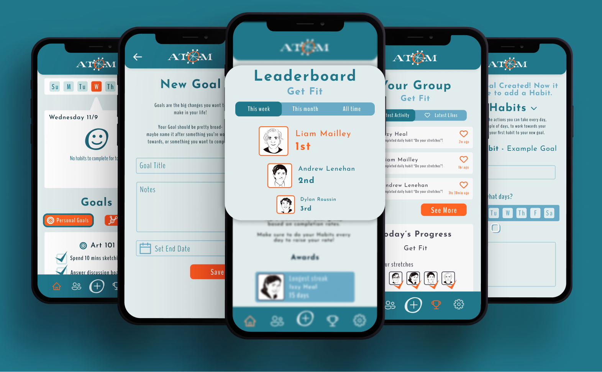
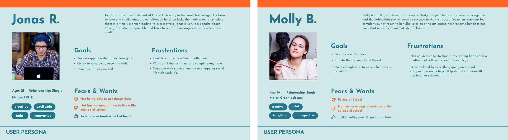
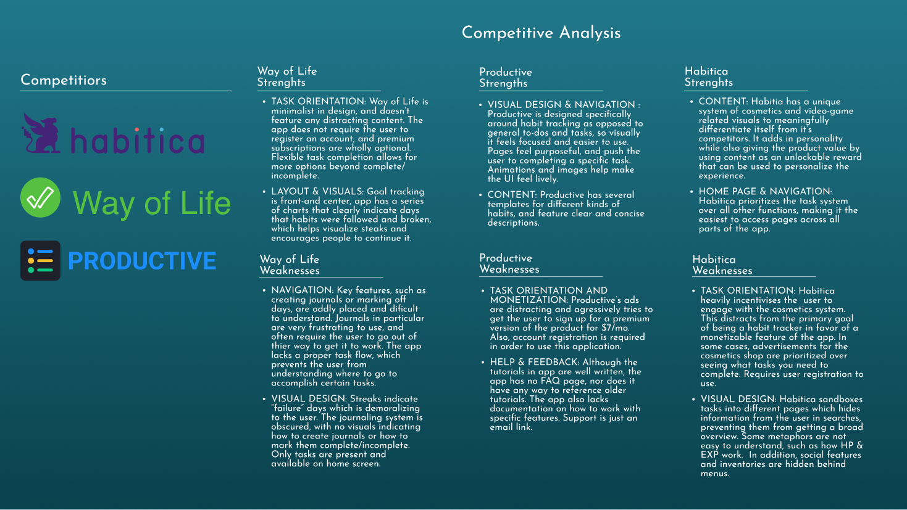
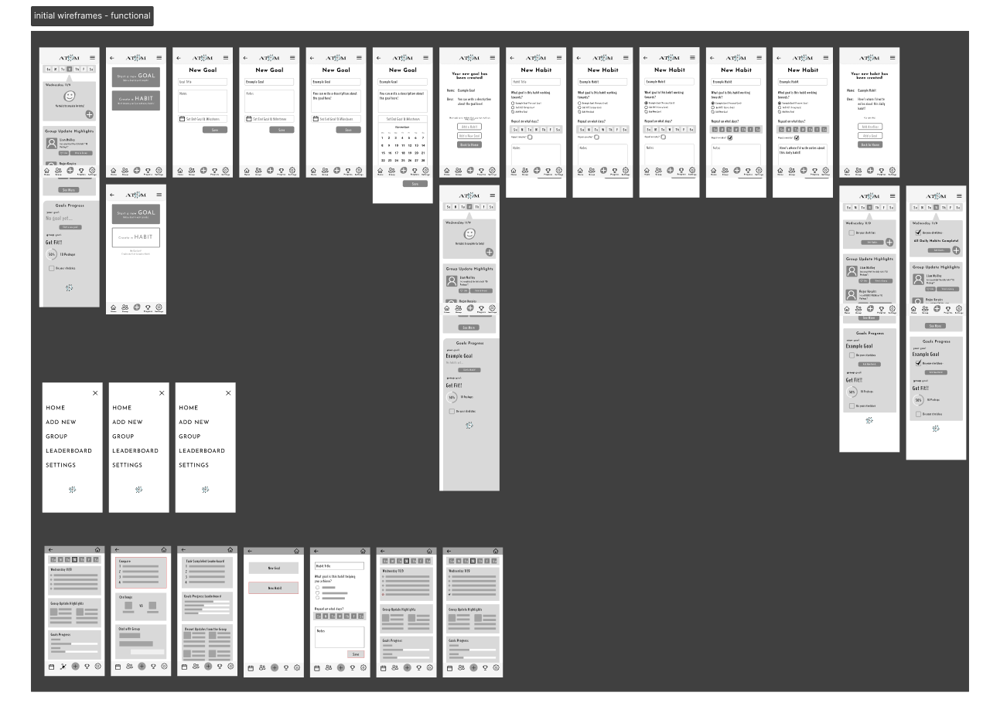
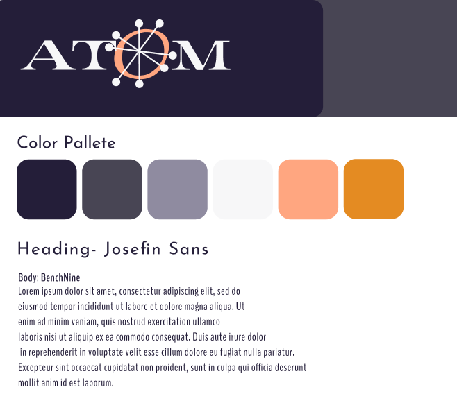
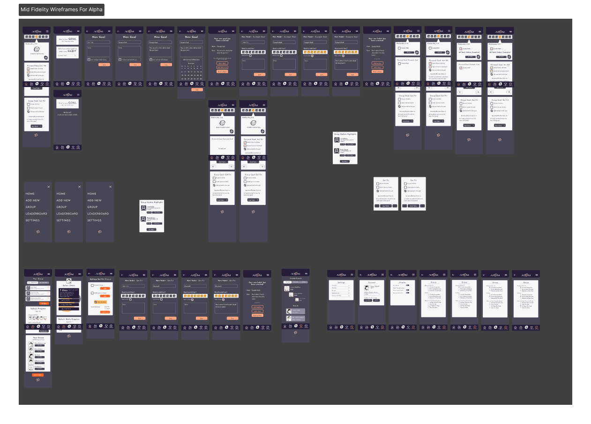
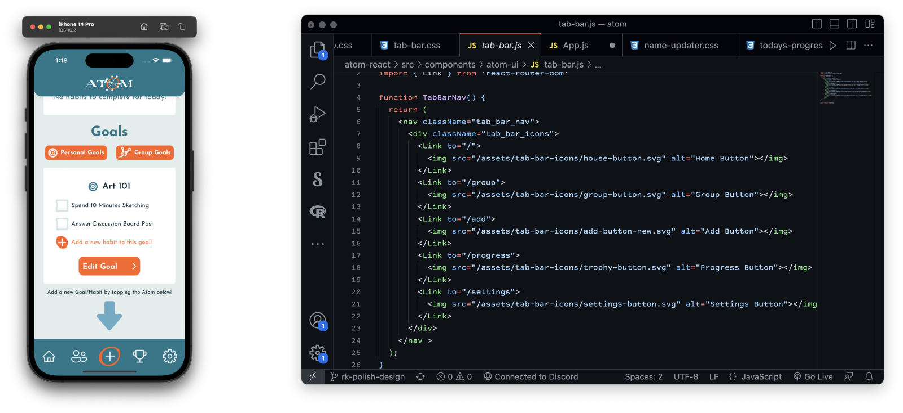
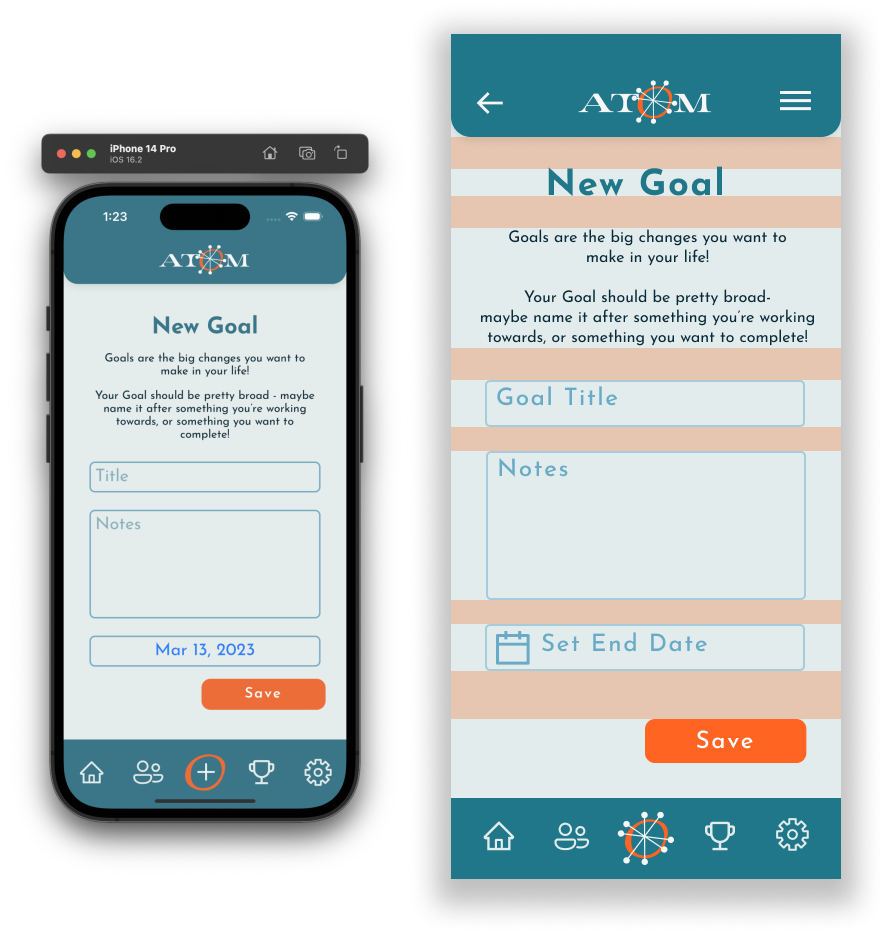

Atom is a habit-tracking application that aims to use social connections to help people stay on track of habits and goals in their lives. This application was built over six months. Its development featured four main phases: initial research, application flow, user testing, and final building and development. These four phases helped us create a functional finished product as well as helped teach us a lot about the design process.
Across a six-month period, our team aimed to build a habit-tracking app. Our only real constraints and budget were the time we had and the skills that we had learned over the past three to four years in the UXID program.
Changing aspects of your life can be very difficult on your own. Managing all of the small habits that go into a larger lifestyle change can take a lot of effort, and holding yourself accountable to those habits is often a challenge.
Atom seeks to help users manage their goals - and more importantly, to manage the habits that help them build towards those goals. It is also community focused, allowing you to add your friends or team members to a single Group Goal. The app encourages your group members to hold each other accountable for the changes they want to make in their lives. The goals of the project are to create a functioning web app that allows users to add goals and habits, and connect with other users in groups.
The first step of the project was research, and we did quite a lot of it. Our first step was to research the psychology of habit tracking. We compiled and synthesized several sources on the topic in order to give us a clearer direction on the methods we would use. This paper can be downloaded as a PDF here. The main conclusions that we found from this research that we looked to incorporate into every step of our design process when buiding the app are:
Additionally, we conducted targeted user research in order to gain more insight into our audience. Our target users are college-aged students who have a lot of different tasks that they need to manage all at once. We created user personas to go along with our research - these personas kept us thinking about our user all throughout the design process. These were invaluable references during UI/UX development; these personas allowed us to easily consider what these users would want.
We also conducted a competitive analysis in order to gauge the choices and/or effectiveness of habit tracking competitors currently on the market. The main purpose of this exercise was to iterate upon what we found effective, and avoid the issues we found.
Once we felt that we understood our users, the psychology behind goals and habits, and our competitors' approaches, we began heavy UI development. This involved building out our wireframes, as well as color palettes and other visual ideas. This focus on the aesthetic was reinforced by our desire to make a friendly, appealing, and heavily stylized app; we would re-evaluate this approach down the line, and it would have been wise to focus on this more heavily at a later point in development.
 After creating our initial wireframe flow, we began user testing. This started with physical paper prototype testing, and used our testing results to create an interactive prototype in Figma. The process of building a new wireframe iteration, testing it, then using this advice for the next round was repeated multiple times throughout the fall quarter. With each round of testing, we got closer and closer to creating the most efficient and enjoyable flow for our users. However, one large issue was presenting itself: users were continually confused about the difference between goals and habits.

Coming back from winter break, we knew we needed to quickly find a solution for this disconnect.
We rapidly iterated through 4 new user flows, all of which addressed the goal/habit issue in different ways.
We had users compare these flows, allowing us to understand which aspects of which flows illuminated the issue.
Eventually, we decided to use bits and pieces of all 4 of these new flows to create the flow present in our high fidelity prototypes.
We now provide clear instructions and prompts throughout the process, while also providing users easy ways to edit their goals or quickly add new habits.
We also created a variety of new color schemes to test alongside our current dark blue and orange scheme.
Feedback we received from our mid fidelity tests told us that this color scheme lacked pop and fun.
After testing, we settled on a new color scheme with shades of teal and orange.
We felt that it was light-hearted, but still professional and encouraging.
Now that we had honed in on our flow and set our stylization in stone, we began focusing on development. This app was created using React and Firebase. From the beginning stages of development, which had begun as early as mid fidelity prototyping, our focus was to build reusable and adjustable components that could be inserted into a variety of sections. As our flow and design changed, so did these components, but this model of building allowed us to streamline development.
 We built out the front-end of components as soon as their wireframes were complete, and soon moved on to creating back-end functionality.
Here is our final deliverable. The walkthrough begins with a simulation of creating an account and a new group goal. Then, the user clicks the Add button which takes them to a popout menu with descriptions of both goals and habits. Upon the selection of either goal or habit from this menu users are taken to the appropriate creation screen. The application tries to give as much information as possible to the users about goals and habits whithin this creation. Once a goal is created, a user can add a habit to the goal. These habits build towards the larger goal, since the psycology research we found on the nature of goal tracking indicated that all goals should be worked towards with micro habits. Demonstrating the conection and distinction between the two is very important. The group features work similarly, however, they also allow interaction between users. This is a huge psycological benefit in terms of sticking with habits and accomplishing goals.
We also created a video to showcase a potential user's experience with the application.
In the end, we were able to create a usable web app that fulfills our base-level concept. There are certainly some extraneous features that we wish that we could have added, but given our limited time and team size, implementing core functionality constitutes a successful project. We are also successful in that we have learned invaluable lessons about the management of team projects, all within six months.
There were a nearly uncountable number of moments of learning from this project - from time management, to communication, to a greater understanding of the purpose and usefulness of data organization. In the future, we would put more work into team organization. We like the idea of designating certain individuals to make executive decisions on certain sections of the project. This would make sure all aspects of the project are progressing, and help take the burden off of the project manager to assign tasks. Another important lesson was just how many steps and processes go into the creation of a project like this. Up until this point, we had not had the opportunity to work from start to finish on an application in this way; developing this entire project from the ground up as a small team really showed how much effort goes into every single product we interact with daily. At some point, someone - likely a team of people - had to develop that product, just like we did.